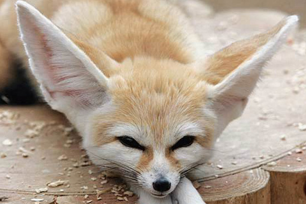
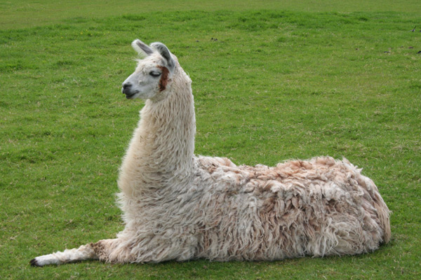
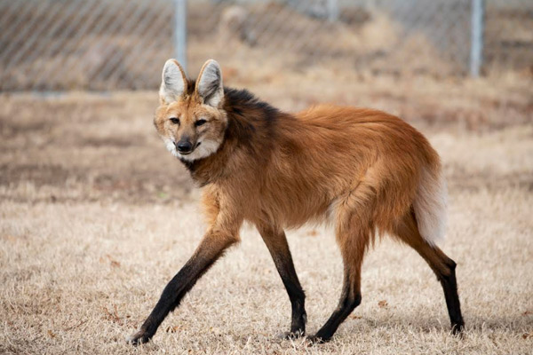
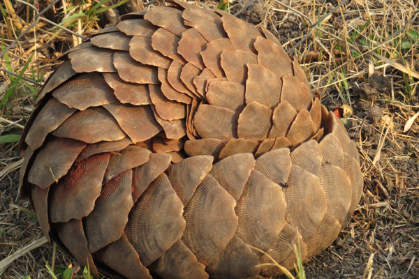
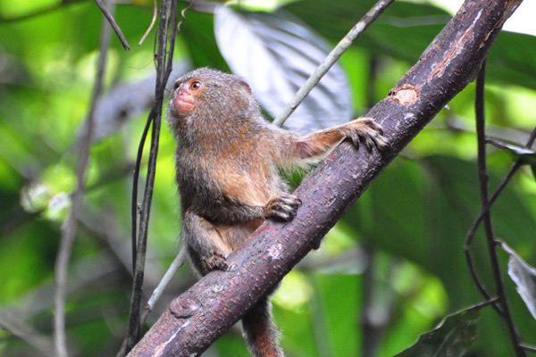
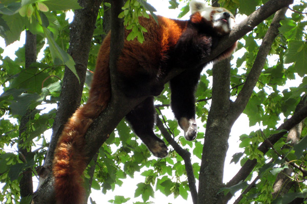

FENNEC FOX

The fennec fox (Vulpes zerda) is a small crepuscular fox native to the Sahara Desert and the Sinai Peninsula. Its most distinctive feature is its unusually large ears, which serve to dissipate heat. The fennec is the smallest canid species. Its coat, ears, and kidney functions have adapted to the desert environment with high temperatures and little water. Also, its hearing is sensitive to hear prey moving underground. It mainly eats insects, small mammals, and birds. The fennec has a life span of up to 14 years in captivity and about 10 years in the wild. Its main predators are the Verreaux's eagle-owl, jackals, and other large mammals. Fennec families dig out burrows in the sand for habitation and protection, which can be as large as 120 m2 (1,292 sq ft) and adjoin the burrows of other families. Precise population figures are not known but are estimated from the frequency of sightings; these indicate that the fennec is currently not threatened by extinction. Knowledge of social interactions is limited to information gathered from captive animals. The fennec is usually assigned to the genus Vulpes; however, this is debated due to differences between the fennec and other fox species. The fennec's fur is prized by indigenous peoples of North Africa, and in some parts of the world, it is considered an exotic pet.
TO LEARN MORE CLICK HERE
LLAMA

The llama (/ˈlɑːmə/; Spanish pronunciation: [ˈʎama]) (Lama glama) is a domesticated South American camelid, widely used as a meat and pack animal by Andean cultures since the Pre-Columbian era.
Llamas are very social animals and live with others as a herd. Their wool is very soft and lanolin-free. Llamas can learn simple tasks after a few repetitions. When using a pack, they can carry about 25 to 30% of their body weight for 8 to 13 km (5–8 miles). The name llama (in the past also spelled "lama" or "glama") was adopted by European settlers from native Peruvians.
The ancestors of Llamas are thought to have originated from the central plains of North America about 40 million years ago, and subsequently migrated to South America about three million years ago during the Great American Interchange. By the end of the last ice age (10,000–12,000 years ago), camelids were extinct in North America. As of 2007, there were over seven million llamas and alpacas in South America, and due to importation from South America in the late 20th century, there are now over 158,000 llamas and 100,000 alpacas in the United States and Canada.In Aymara mythology llamas are important beings. The Heavenly Llama is said to drink water from the ocean and urinates as it rains. According to Aymara eschatology llamas will return to the water springs and lagoons where they come from at the end of time.
TO LEARN MORE CLICK HERE
MANED WOLF

The maned wolf (Chrysocyon brachyurus) is the largest canine of South America. Its markings resemble those of foxes, but it is neither a fox nor a wolf. It is the only species in the genus Chrysocyon (meaning "golden dog").
It is the largest canid in South America, with a weight between 20 and 30 kg, and reaches up to 90 cm at the withers. Its long, thin legs and dense reddish coat give it an unmistakable appearance. The maned wolf is a crepuscular and omnivorous animal adapted to the open environments of the South American savanna, with an important role in the seed dispersal of fruits, especially the wolf apple (Solanum lycocarpum). The maned wolf is a solitary animal. It communicates primarily by scent marking, but also gives a loud call known as "roar-barking".
This mammal is found in open and semi open habitats, especially grasslands with scattered bushes and trees, in the Cerrado of south, central-west, and southeastern Brazil; Paraguay; northern Argentina; and Bolivia east and north of the Andes, and far southeastern Peru (Pampas del Heath only). It is very rare in Uruguay, possibly being displaced completely through loss of habitat. The International Union for Conservation of Nature lists it as near threatened, while it is considered a vulnerable species by the Brazilian Institute of Environment and Renewable Natural Resources. Pangolin Pangolins, sometimes known as scaly anteaters, are mammals of the order Pholidota (from Ancient Greek φολῐ́ς, "horny scale"). The one extant family, Manidae, has three genera: Manis, Phataginus and Smutsia. Manis comprises the four species found in Asia, while Phataginus and Smutsia include two species each, all found in Sub-Saharan Africa. These species range in size from 30 to 100 cm (12 to 39 in). A number of extinct pangolin species are also known.
TO LEARN MORE CLICK HERE
PANGOLIN

Pangolins, sometimes known as scaly anteaters, are mammals of the order Pholidota (from Ancient Greek φολῐ́ς, "horny scale"). The one extant family, Manidae, has three genera: Manis, Phataginus and Smutsia. Manis comprises the four species found in Asia, while Phataginus and Smutsia include two species each, all found in Sub-Saharan Africa. These species range in size from 30 to 100 cm (12 to 39 in). A number of extinct pangolin species are also known.
Pangolins have large, protective keratin scales covering their skin; they are the only known mammals with this feature. They live in hollow trees or burrows, depending on the species. Pangolins are nocturnal, and their diet consists of mainly ants and termites, which they capture using their long tongues. They tend to be solitary animals, meeting only to mate and produce a litter of one to three offspring, which they raise for about two years.
Pangolins are threatened by poaching (for their meat and scales, which are used in Chinese traditional medicine) and heavy deforestation of their natural habitats and are the most trafficked mammals in the world. As of January 2020, there are eight species of pangolin whose conservation status is listed in the threatened tier. Three (Manis culionensis, M. pentadactyla and M. javanica) are critically endangered, three (Phataginus tricuspis, Manis crassicaudata and Smutsia gigantea) are endangered and two (Phataginus tetradactyla and Smutsia temminckii) are vulnerable on the Red List of Threatened Species of the International Union for Conservation of Nature.
TO LEARN MORE CLICK HERE
PYGMY MARMOSET

The pygmy marmoset, genus Cebuella, is a small genus of New World monkey native to rainforests of the western Amazon Basin in South America. It is notable for being the smallest monkey and one of the smallest primates in the world, at just over 100 grams (3.5 oz). It is generally found in evergreen and river-edge forests and is a gum-feeding specialist, or a gummivore.
About 83% of the pygmy marmoset population lives in stable troops of two to nine individuals, including a dominant male, a breeding female, and up to four successive litters of offspring. The modal size of a standard stable troop would be six individuals. Although most groups consist of family members, some may also include one or two additional adult members. Members of the group communicate using a complex system including vocal, chemical, and visual signals. Three main calling signals depend on the distance the call needs to travel. These monkeys may also make visual displays when threatened or to show dominance. Chemical signaling using secretions from glands on the chest and genital area allow the female to indicate to the male when she is able to reproduce. The female gives birth to twins twice a year and the parental care is shared between the group.
The pygmy marmoset has been viewed as somewhat different from typical marmosets, most of which are classified in the genera Callithrix and Mico, and thus is accorded its own genus, Cebuella, within the family Callitrichidae. The biggest threats are habitat loss and the pet trade.
TO LEARN MORE CLICK HERE
RED PANDA

The red panda (Ailurus fulgens) is a mammal species native to the eastern Himalayas and southwestern China. It is listed as Endangered on the IUCN Red List because the wild population is estimated at fewer than 10,000 mature individuals and continues to decline due to habitat loss and fragmentation, poaching, and inbreeding depression. Despite its name, it is not closely related to the giant panda.
The red panda has reddish-brown fur, a long, shaggy tail, and a waddling gait due to its shorter front legs; it is roughly the size of a domestic cat, though with a longer body, and is somewhat heavier. It is arboreal and feeds mainly on bamboo, but also eats eggs, birds, and insects. It is a solitary animal, mainly active from dusk to dawn, and is largely sedentary during the day. It is also called the lesser panda, the red bearcat, and the red cat-bear.
The red panda is the only living member of the genus Ailurus and the family Ailuridae. It has previously been placed in the raccoon and bear families, but the results of phylogenetic analysis provide strong support for its taxonomic classification in its own family, Ailuridae, which is part of the superfamily Musteloidea, along with the weasel, raccoon and skunk families. Traditionally it was thought to consist of two subspecies. However, results of genetic analysis indicate that there are probably two distinct red